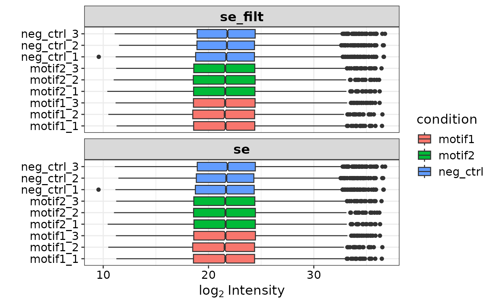
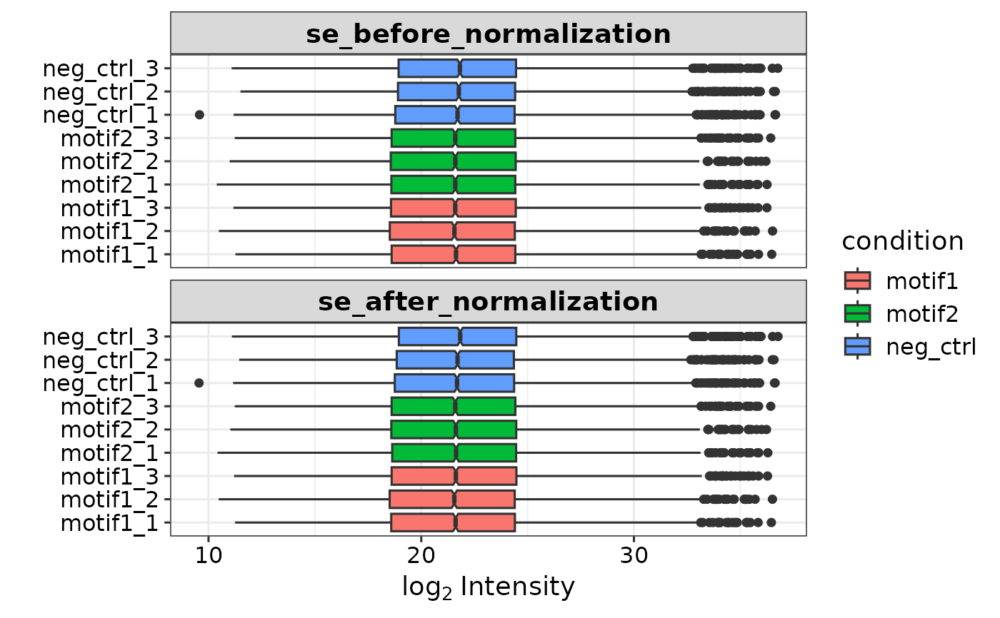

Prepare summarizedExperiment object from diann report.pg_matrix file
Source:R/prepare_se.R
prepare_se.RdPrepare summarizedExperiment object from diann report.pg_matrix file
Usage
prepare_se(
pg_matrix,
expDesign,
pr_matrix = NULL,
missing_thr = 0,
min_peptides = 1,
impute = "knn",
mixed_cutoff = "empirically",
remove_contaminants = TRUE
)Arguments
- pg_matrix
the report.pg_matrix file from DIANN
- expDesign
A data frame with the experimental design. Should contain at least 'label', 'condition', and 'replicate' columns.
- pr_matrix
Optional argument. If the report.pr_matrix file from DIANN is provided, peptide information will be added to output.
- missing_thr
Integer specifying which proteinGroups are filtered out based on missing values.
- min_peptides
An integer specifing the cutoff for razor/unique peptides. The default is 0.
- impute
Specifies which imputatation method to use (default: knn). No imputation is done when entering 'none'. See details for options.
- mixed_cutoff
Either 'empirally' or a value between 0-1. For details, see mixed_imputation
- remove_contaminants
A logical value specifying if potential contaminants should be removed from the pg_matrix.
Details
For standard imputation options, see ?DEP::impute. For mixed imputation, see mixed_imputation
Examples
se <- prepare_se(report.pg_matrix,
expDesign, missing_thr = 1,
impute = 'knn') # creates se with missing values imputed

#> Imputing along margin 1 (features/rows).
#> Warning: 179 rows with more than 50 % entries missing;
#> mean imputation used for these rows
#> Cluster size 5663 broken into 3631 2032
#> Cluster size 3631 broken into 1249 2382
#> Done cluster 1249
#> Cluster size 2382 broken into 1294 1088
#> Done cluster 1294
#> Done cluster 1088
#> Done cluster 2382
#> Done cluster 3631
#> Cluster size 2032 broken into 651 1381
#> Done cluster 651
#> Done cluster 1381
#> Done cluster 2032
# creates se without imputing missing values.
se <- prepare_se(report.pg_matrix,
expDesign,
missing_thr = 1,
impute = 'none')
